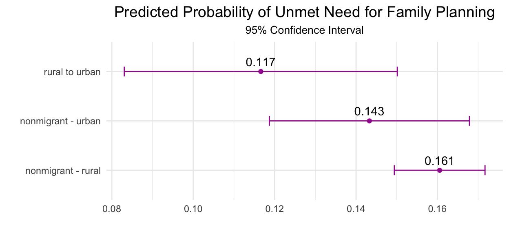

Summary and source code from a recent article using data from Ethiopia.
When great new research gets published with PMA data on a topic we’re covering here on the Data Analysis Hub, we’ll cover the highlights and explore some source code in a PMA Publications post.
As part of our new series on women’s migration experiences and their impact on family planning, let’s dig into a paper from University of Minnesota researchers Emily Groene and Devon Kristiansen (2021) published in the journal Population, Space and Place.
As we’ll see throughout this series, migration can be associated with major changes in an individual’s fertility intentions and family planning access, and it can either increase or decrease the likelihood of experiencing unmet need for family planning under different circumstances. Groene & Kristiansen focus their attention on the particular circumstances around rural-to-urban internal (within-country) migration, which is one of the prevailing modes of migration throughout the countries surveyed by PMA (McAuliffe and Ruhs 2017).
Consider all of the potential changes a person might experience when moving from a rural to an urban area: Groene & Kristiansen outline literature that suggests quite a few ways that these changes might impact fertility behavior. Some are likely to increase demand for family planning, for example:
On the other hand, several offsetting factors may push to maintain or even decrease demand for family planning:
Even when we focus our analysis on rural-urban internal migrants, it’s very hard to predict how these and other factors might react to determine the family planning needs for any given person. From a policy perspective, where planning is needed to identify and address unmet need for family planning services on a larger scale, Groene & Kristiansen offer important insights into the ways that migration experiences are tied to a particular place. Using female respondents from the Ethiopia 2017 and 2018 samples, they compare unmet need among rural-urban internal migrants to the unmet need experienced by non-migrants in both rural and urban settings. They find that migrants are less likely to experience unmet need compared to non-migrants, controlling for a number of demographic factors.
In this post, we’ll show how to recreate their analysis using an IPUMS PMA data extract in R.
The Ethiopia 2017 and 2018 samples were among the first PMA samples to include questions related to women’s most recent migration experience, and about the region where they were born. Their responses are included in variables listed in the migration variable group:
LIVEINREGION - How long living continuously in current regionLIVEINREGIONYRS - Number of years continuously living in current regionLASTREGION - Region/country of residence before current regionLASTUR - Urban/rural status of residence before current regionBIRTHREGIONET - Region of woman’s birth, EthiopiaBIRTHUR - Urban/rural status of region of woman’s birthMIGMAINRSN - The main reason why moved to current place of residenceMIGPREKID - Gave birth before moved to current regionMIGPREKIDNUM - Number of sons/daughters before moving to current regionGroene & Kristiansen use the variable LIVEINREGION to determine whether a woman has always lived in the same place and, if not, they use BIRTHUR together with URBAN to identify those who ultimately moved from a rural place to an urban place. We’ve created a data extract containing these and all of the other variables discussed below (female respondents only); we’ll start by loading it and the following packages in R:
We’ll first label the various non-response values in this dataset with the value NA using ipumsr::lbl_na_if applied to all variables with dplyr::across:
dat <- dat %>%
mutate(
across(everything(), ~lbl_na_if(
.x,
~.lbl %in% c(
"Don't know",
"No response or missing",
"NIU (not in universe)",
"NIU (not in universe) or missing"
)
))
)
Ethiopia samples are stratified by region (GEOET) and urban status (URBAN), resulting in 21 sampling strata from which primary sampling units (EAID) are selected. The authors exclude women from any STRATA where fewer than 200 women were sampled across both sample years:
dat %>% count(STRATA)
# A tibble: 21 × 2
STRATA n
<int+lbl> <int>
1 23101 [Addis Ababa - urban, Ethiopia] 1833
2 23102 [Amhara - urban, Ethiopia] 1005
3 23103 [Amhara - rural, Ethiopia] 1651
4 23104 [Oromiya - urban, Ethiopia] 1216
5 23105 [Oromiya - rural, Ethiopia] 2275
6 23106 [Other, Ethiopia] 839
7 23107 [SNNP - urban, Ethiopia] 1904
8 23108 [SNNP - rural, Ethiopia] 1241
9 23109 [Tigray - urban, Ethiopia] 1455
10 23110 [Tigray - rural, Ethiopia] 810
11 23111 [Dire Dawa - urban, Ethiopia] 22
12 23112 [Dire Dawa - rural, Ethiopia] 29
13 23113 [Afar - urban, Ethiopia] 32
14 23114 [Afar - rural, Ethiopia] 218
15 23115 [Somali - urban, Ethiopia] 73
16 23116 [Somali - rural, Ethiopia] 123
17 23117 [Gambella - urban, Ethiopia] 34
18 23118 [Gambella - rural, Ethiopia] 23
19 23119 [Harari - urban, Ethiopia] 29
20 23120 [Harari - rural, Ethiopia] 26
21 23121 [BG - rural, Ethiopia] 172Note that this will drop women from STRATA numbered 23111-23113 and 23115-23121:
Now, consider the dependent variable UNMETYN, which is a constructed variable indicating whether each respondent currently has an unmet need for family planning. All respondents to the female questionnaire are included in the universe for UNMETYN, so women who are not able to become pregnant or are not sexually active are determined to have “no unmet need.”
Within the combined sample of female respondents from both years, about 12% of women demonstrated unmet need for family planning:
# A tibble: 1 × 1
mean_UNMETYN
<dbl>
1 0.120We’ll use the survey package - and its tidy companion srvyr - to specify PMA sample design in our population estimates. The function srvyr::survey_mean uses information about the survey design (given by srvyr::as_survey_design) to estimate that an average woman aged 15-49 in Ethiopia has about a 15% chance of experiencing unmet need for family planning, with a 95% confidence interval ranging between 13.5% and 16.7%:
dat %>%
as_survey_design(
id = EAID,
nest = T,
weight = FQWEIGHT,
strata = STRATA
) %>%
summarize(pop_UNMETYN = survey_mean(UNMETYN, vartype = "ci", na.rm = T))
# A tibble: 1 × 3
pop_UNMETYN pop_UNMETYN_low pop_UNMETYN_upp
<dbl> <dbl> <dbl>
1 0.151 0.135 0.167In order to conduct a three-way comparison between rural-urban migrants, rural non-migrants, and urban non-migrants, the authors construct a variable we’ll call MIGRANT_DIR.
The first component of MIGRANT_DIR evaluates whether each woman ever migrated from her place of birth. Using LIVEINREGION, any woman reporting that she has “always” lived in her current region is not a migrant, and any woman who has lived in her current region for a number of “months or years” is a migrant (note: we cannot determine the migration history for all of the remaining cases, so they will be excluded from further analysis).
dat %>% count(LIVEINREGION)
# A tibble: 4 × 2
LIVEINREGION n
<int+lbl> <int>
1 10 [Always] 11777
2 20 [Currently visiting] 124
3 30 [Months or years] 2539
4 NA 7Migrants who were born in a rural place !BIRTHUR and now live in an urban place URBAN meet the definition for rural-urban migrant. Non-migrants are classified by their current URBAN status only. All other women are implicitly given the value NA and then filtered out of the dataset.
dat <- dat %>%
mutate(
across(c(BIRTHUR, URBAN), ~.x %>% zap_labels),
MIGRANT = case_when(
LIVEINREGION == 30 ~ T,
LIVEINREGION == 10 ~ F
),
MIGRANT_DIR = case_when(
MIGRANT & !BIRTHUR & URBAN ~ "rural to urban",
!MIGRANT & !URBAN ~ "nonmigrant - rural",
!MIGRANT & URBAN ~ "nonmigrant - urban"
)
) %>%
filter(!is.na(MIGRANT_DIR))
dat %>% count(MIGRANT_DIR)
# A tibble: 3 × 2
MIGRANT_DIR n
<chr> <int>
1 nonmigrant - rural 6437
2 nonmigrant - urban 5340
3 rural to urban 1421You may notice that we’ve created MIGRANT_DIR as a string, or a character object. We’ll coerce it as a factor later so we can easily use each of the three classifications in a logistic regression model.
The authors control for a number of covariates in addition to MIGRANT_DIR. The following covariates are recoded versions of existing PMA variables:
BIRTHS: number of children ever born CHEB (2017), or the woman’s total number of birth events BIRTHEVENT (2018, e.g. birth of twins is a single event)PARTNERED: recoded MARSTAT, indicating if the woman is either currently married or living with a partnerRELGEN: recoded RELIGION as “muslim,” “christian,” or “other”dat <- dat %>%
mutate(
across(c(BIRTHEVENT, CHEB), ~.x %>% zap_labels),
BIRTHS = case_when(
YEAR == 2018 ~ BIRTHEVENT,
T ~ CHEB
),
PARTNERED = case_when(
MARSTAT %in% 21:22 ~ T,
!is.na(MARSTAT) ~ F
),
RELGEN = case_when(
RELIGION == 100 ~ "muslim",
RELIGION >= 200 & RELIGION < 300 ~ "christian",
T ~ "other"
)
)
The remaining covariates are used without further modification:
As discussed above, the authors exclude any female respondents from small STRATA (n < 200) and those who are neither rural-urban migrants nor non-migrants. Additionally, they remove rural-urban migrants who moved to Ethiopia from another country. Women can indicate this information in two places: they may either list a foreign country in LASTREGION or indicate “abroad” as their region of birth in BIRTHREGIONET.
dat %>% count(LASTREGION)
# A tibble: 18 × 2
LASTREGION n
<int+lbl> <int>
1 101 [Tigray] 50
2 102 [Afar] 7
3 103 [Amhara] 399
4 104 [Oromia] 360
5 105 [Ethiopia Somali] 1
6 106 [Benishangul Gumuz] 4
7 107 [SNNPR] 390
8 108 [Gambella] 4
9 109 [Harari] 7
10 110 [Addis Ababa] 116
11 111 [Dire Dawa] 7
12 202 [Saudi Arabia] 33
13 204 [Beirut] 5
14 205 [United Arab Emirates] 9
15 206 [Sudan] 5
16 210 [Lebanon] 1
17 300 [Other] 23
18 NA 11777dat %>% count(BIRTHREGIONET)
# A tibble: 12 × 2
BIRTHREGIONET n
<int+lbl> <int>
1 1 [Tigray Region] 2110
2 2 [Afar Region] 430
3 3 [Amhara Region] 2911
4 4 [Oromia Region] 3472
5 5 [Somali Region] 166
6 6 [Benishangul-Gumuz Region] 148
7 7 [Southern Nations, Nationalities, and Peoples' Region] 3057
8 8 [Gambella Region] 26
9 9 [Harari Region] 35
10 10 [Addis Ababa (city)] 814
11 11 [Dire Dawa (city)] 27
12 12 [Abroad] 2The authors also exclude women whose PARTNERED status (i.e. sexual activity) cannot be determined, and women who indicate that they are either “infertile” in FERTPREF or “menopausal / hysterectomy” in TIMEMENSTRUATE. Women who are not at risk of pregnancy for these reasons cannot have unmet need, so they are removed from the sample.
dat %>% count(PARTNERED)
# A tibble: 3 × 2
PARTNERED n
<lgl> <int>
1 FALSE 5513
2 TRUE 7606
3 NA 2dat %>% count(FERTPREF)
# A tibble: 4 × 2
FERTPREF n
<int+lbl> <int>
1 1 [Have another child] 8983
2 2 [No more children] 2702
3 3 [Infertile] 225
4 NA 1211dat %>% count(TIMEMENSTRUATE)
# A tibble: 8 × 2
TIMEMENSTRUATE n
<int+lbl> <int>
1 1 [Days] 3113
2 2 [Weeks] 4111
3 3 [Months] 2955
4 4 [Years] 1276
5 5 [Menopausal/hysterectomy] 85
6 6 [Before last birth] 1231
7 7 [Never menstruated] 317
8 NA 33Lastly, they exclude women with missing values on any of the remaining covariates.
From 15,010 female respondents included in the original extract, this sub-sampling procedure leaves us with 12,630 remaing cases.
As a final processing step, we’ll coerce each of our categorical variables (including MIGRANT_DIR) as factors. All but one of these is a labelled integer object where we’ll use the response with the lowest value as a reference group; because we created MIGRANT_DIR as a character object, we’ll specify its reference group manually:
dat <- dat %>%
mutate(
across(
c(
MIGRANT_DIR,
RELGEN,
WEALTHQ,
EDUCATTGEN,
HCVISITY,
SUBNATIONAL,
PARTNERED,
YEAR
),
~as_factor(.) %>% droplevels()
),
MIGRANT_DIR = fct_relevel(MIGRANT_DIR, "nonmigrant - urban")
)
Finally, we’re ready to build a regression model for UNMETYN using MIGRANT_DIR and the covariates discussed above!
Recall that the function srvyr::survey_mean estimated that 15.1% of all women aged 15-49 in Ethiopia experience unmet need for family planning. This estimate used all of the women in our original sample prior to the sub-sampling procedure we just discussed. Now that we’ve created a sub-sample from the original dataset, let’s see how the population estimate has changed:
dat %>%
as_survey_design(
id = EAID,
nest = T,
weight = FQWEIGHT,
strata = STRATA
) %>%
summarize(pop_UNMETYN = survey_mean(UNMETYN, vartype = "ci", na.rm = T))
# A tibble: 1 × 3
pop_UNMETYN pop_UNMETYN_low pop_UNMETYN_upp
<dbl> <dbl> <dbl>
1 0.157 0.140 0.174Now that we’ve removed some cases (notably, all women who are infertile), the estimated population mean is close, but somewhat higher at 15.7%.
Groene & Kristiansen build a multilevel logistic regression model for UNMETYN that breaks down this full-population estimate for each of the sub-groups represented by our independent variables. We’ll report the exponentiated coefficient estimates for each variable, which means that we’ll need to interpret each estimate as a change in the odds that a woman will experience UNMETYN relative to a woman in a reference group.
We’ll build the authors’ model m1 using the function survey::svyglm, which - like survey_mean - uses information about the sample design provided by as_survey_design to generate cluster-robust standard error estimates:
m1 <- dat %>%
as_survey_design(
id = EAID,
nest = T,
weight = FQWEIGHT,
strata = STRATA
) %>%
svyglm(
UNMETYN ~
AGE +
MIGRANT_DIR +
RELGEN +
WEALTHQ +
EDUCATTGEN +
BIRTHS +
HCVISITY +
SUBNATIONAL +
PARTNERED +
YEAR,
design = .,
family = "quasibinomial",
)
To simplify the output a bit, we’ll show a tidy table with just the term, point estimate, the 95% confidence interval, and the p-value (each rounded to two decimal places):
m1 %>%
tidy(exp = T, conf.int = T) %>%
select(term, estimate, conf.low, conf.high, p.value) %>%
mutate(across(where(is.numeric), ~round(.x, 2)))
# A tibble: 27 × 5
term estimate conf.low conf.high p.value
<chr> <dbl> <dbl> <dbl> <dbl>
1 (Intercept) 0.13 0.06 0.27 0
2 AGE 0.96 0.94 0.97 0
3 MIGRANT_DIRnonmigrant - rural 1.15 0.84 1.55 0.38
4 MIGRANT_DIRrural to urban 0.75 0.59 0.96 0.02
5 RELGENother 0.88 0.58 1.34 0.54
6 RELGENchristian 0.59 0.48 0.72 0
7 WEALTHQLower quintile 0.99 0.79 1.25 0.96
8 WEALTHQMiddle quintile 1.06 0.84 1.33 0.63
9 WEALTHQHigher quintile 0.82 0.64 1.05 0.11
10 WEALTHQHighest quintile 0.84 0.56 1.27 0.42
11 EDUCATTGENPrimary/Middle school 1.05 0.87 1.26 0.59
12 EDUCATTGENSecondary/post-prima… 0.76 0.55 1.05 0.1
13 EDUCATTGENTertiary/post-second… 1 0.68 1.49 0.98
14 BIRTHS 1.24 1.18 1.31 0
15 HCVISITYYes 0.85 0.71 1.01 0.06
16 SUBNATIONALAfar, Ethiopia 0.23 0.12 0.44 0
17 SUBNATIONALAmhara, Ethiopia 0.55 0.44 0.69 0
18 SUBNATIONALOromiya, Ethiopia 0.91 0.73 1.14 0.41
19 SUBNATIONALSomali, Ethiopia 0.74 0.33 1.7 0.48
20 SUBNATIONALBenishangul-Gumuz, … 0.55 0.28 1.08 0.08
21 SUBNATIONALSNNP, Ethiopia 0.9 0.68 1.2 0.48
22 SUBNATIONALGambella, Ethiopia 0.86 0.15 4.9 0.86
23 SUBNATIONALHarari, Ethiopia 2.06 1.69 2.52 0
24 SUBNATIONALAddis Ababa, Ethiop… 0.98 0.69 1.4 0.93
25 SUBNATIONALDire Dawa, Ethiopia 0.77 0.47 1.27 0.3
26 PARTNEREDTRUE 6.69 4.75 9.43 0
27 YEAR2018 0.88 0.74 1.05 0.15Controlling for all of the covariates we’ve discussed, the authors find that rural-urban internal migrants are less likely than both urban and rural non-migrants to experience unmet need for family planning!
How do we identify this finding in the model output? Notice that the estimated odds of experiencing UNMETYN for rural to urban migrants is 0.75, and that the associated 95% confidence interval ranges from 0.59 to 0.95: this represents the migrants’ odds compared to urban non-migrants. If the 95% confidence interval included the value 1.0, we would say that there’s more than a 5% chance that the migrants’ odds could be equal to the odds experienced by urban non-migrants. Because it does not include 1.0, we instead say that there’s a statistically significant difference between the two groups (at the 5% confidence threshold).
Because the authors selected urban non-migrants as a reference group, our model output shows the relationship between rural non-migrants and rural-urban migrants a bit less clearly. Although the point estimate for rural to urban migrants (0.75) is lower than the point estimate for nonmigrant - rural (1.15), their respective confidence intervals overlap. In order to see that they actually are statistically different, we’d need to run the model again with a different reference group.
While the output from our logistic regression model helps show the relative difference between groups, we’re not yet able to predict the absolute risk of UNMETYN for each group. Recall that, before building our model, we calculated that the average unmet need for all women in Ethiopia (excluding external migrants, infertile women, etc) was about 15.7%. We’ll now estimate the average unmet need experienced by all women in Ethiopia sorted into the three groups represented by MIGRANT_DIR.
The predict function allows us to make a prediction about each woman’s likelihood of experiencing unmet need according to the model m1. When we tell predict to return type = "response", it gives us the predicted probability that each woman should have UNMETYN.
tibble(predicted = predict(m1, type = "response"))
# A tibble: 12,630 × 1
predicted
<svystat>
1 0.072659141
2 0.338704987
3 0.033291206
4 0.376765517
5 0.025819303
6 0.528723102
7 0.009790659
8 0.088323159
9 0.044348246
10 0.027093896
# … with 12,620 more rowsIf we wanted to compare each individual’s predicted probability to the value they actually do have for UNMETYN, we could attach our prediction back to our dataset. Remember that the original UNMETYN variable is binary, whereas the predictions are continuous probabilities that range from 0 to 1. Here, we hope to see that women whose predicted probability exceeds 0.50 have UNMETYN == 1, while those whose predicted probability is less than 0.50 have UNMETYN == 0:
tibble(predicted = predict(m1, type = "response")) %>%
bind_cols(dat) %>%
select(predicted, UNMETYN)
# A tibble: 12,630 × 2
predicted UNMETYN
<svystat> <int+lbl>
1 0.072659141 0 [No unmet need]
2 0.338704987 0 [No unmet need]
3 0.033291206 0 [No unmet need]
4 0.376765517 0 [No unmet need]
5 0.025819303 0 [No unmet need]
6 0.528723102 1 [Unmet need]
7 0.009790659 0 [No unmet need]
8 0.088323159 0 [No unmet need]
9 0.044348246 0 [No unmet need]
10 0.027093896 0 [No unmet need]
# … with 12,620 more rowsWe can also use predict to calculate predicted probabilities for hypothetical samples. For instance, the authors provide the predicted probabilities for a hypothetical sample of women that is completely identical to the real sample, except that they all share the same value for MIGRANT_DIR (all other variables are kept at their originial values). The mean predicted probability derived from this kind of hypothetical sample is known as a predictive margin.
While the point estimates for each group in MIGRANT_DIR are easy to calculate with predict, the confidence intervals for those estimates are a bit harder to obtain. Here, we’ll use rsample::bootstraps to generate 100 replicates of our sample. This will allow us to rebuild our model 100 times:
set.seed(1) # This ensures reproducible bootstrap sampling
boots_dat <- dat %>%
rsample::bootstraps(100, EAID) %>%
transmute(
id = parse_number(id),
splits = map(splits, as_tibble),
model = map(splits, ~{
.x %>%
as_survey_design(
id = EAID,
nest = T,
weight = FQWEIGHT,
strata = STRATA
) %>%
svyglm(
UNMETYN ~
AGE +
MIGRANT_DIR +
RELGEN +
WEALTHQ +
EDUCATTGEN +
BIRTHS +
HCVISITY +
SUBNATIONAL +
PARTNERED +
YEAR,
design = .,
family = "quasibinomial",
)
})
)
boots_dat
# A tibble: 100 × 3
id splits model
<dbl> <list> <list>
1 1 <tibble [12,630 × 38]> <svyglm>
2 2 <tibble [12,630 × 38]> <svyglm>
3 3 <tibble [12,630 × 38]> <svyglm>
4 4 <tibble [12,630 × 38]> <svyglm>
5 5 <tibble [12,630 × 38]> <svyglm>
6 6 <tibble [12,630 × 38]> <svyglm>
7 7 <tibble [12,630 × 38]> <svyglm>
8 8 <tibble [12,630 × 38]> <svyglm>
9 9 <tibble [12,630 × 38]> <svyglm>
10 10 <tibble [12,630 × 38]> <svyglm>
# … with 90 more rowsNotice that each row of boots_dat contains a completely resampled version of dat contained in each row of the column splits. The column model contains the output from a model that’s uniquely fitted to the resampled data in splits.
Next, we’ll use predict separately for each row in boots_dat. Because we generate three new rows each time - one prediction for each group in MIGRANT_DIR - the resulting data frame has 300 rows.
boots_dat <- boots_dat %>%
rowwise() %>%
mutate(nested_predictions = list(map_df(levels(dat$MIGRANT_DIR), ~{
predict(
model,
type = "response",
newdata = splits %>% mutate(MIGRANT_DIR = .x)) %>%
tibble() %>%
bind_cols(splits) %>%
as_survey_design(
id = EAID,
nest = T,
weight = FQWEIGHT,
strata = STRATA
) %>%
summarise(predicted = survey_mean(., vartype = "ci")) %>%
mutate(MIGRANT_DIR = .x) %>%
select(MIGRANT_DIR, predicted)
}))) %>%
unnest(nested_predictions)
boots_dat
# A tibble: 300 × 5
id splits model MIGRANT_DIR predicted
<dbl> <list> <list> <chr> <dbl>
1 1 <tibble [12,630 × 38]> <svyglm> nonmigrant - urban 0.151
2 1 <tibble [12,630 × 38]> <svyglm> nonmigrant - rural 0.163
3 1 <tibble [12,630 × 38]> <svyglm> rural to urban 0.112
4 2 <tibble [12,630 × 38]> <svyglm> nonmigrant - urban 0.149
5 2 <tibble [12,630 × 38]> <svyglm> nonmigrant - rural 0.155
6 2 <tibble [12,630 × 38]> <svyglm> rural to urban 0.0840
7 3 <tibble [12,630 × 38]> <svyglm> nonmigrant - urban 0.142
8 3 <tibble [12,630 × 38]> <svyglm> nonmigrant - rural 0.155
9 3 <tibble [12,630 × 38]> <svyglm> rural to urban 0.133
10 4 <tibble [12,630 × 38]> <svyglm> nonmigrant - urban 0.133
# … with 290 more rowsFinally, we’ll calculate:
qnrom(0.975)group_predictions <- boots_dat %>%
group_by(MIGRANT_DIR) %>%
summarise(
mean = mean(predicted),
se = sd(predicted),
lower = mean - se*qnorm(0.975),
upper = mean + se*qnorm(0.975)
)
group_predictions
# A tibble: 3 × 5
MIGRANT_DIR mean se lower upper
<chr> <dbl> <dbl> <dbl> <dbl>
1 nonmigrant - rural 0.161 0.00568 0.149 0.172
2 nonmigrant - urban 0.143 0.0125 0.119 0.168
3 rural to urban 0.117 0.0171 0.0831 0.150And here are those intervals plotted with geom_errorbarh and geom_point:
ggplot(group_predictions) +
geom_errorbarh(
color = "#A2269C",
aes(height = .2, xmin = lower, xmax = upper, y = MIGRANT_DIR)
) +
geom_point(
color = "#A2269C",
aes(x = mean, y = MIGRANT_DIR)
) +
geom_text(
nudge_y = 0.2,
aes(label = round(mean, 3), x = mean, y = MIGRANT_DIR)
) +
scale_x_continuous(breaks = seq(.08, .18, by = .02)) +
theme_minimal() +
labs(
subtitle = "95% Confidence Interval",
title = "Predicted Probability of Unmet Need for Family Planning",
y = "",
x = ""
) +
theme(
plot.title = element_text(hjust = 0.5, size = 14),
plot.subtitle = element_text(hjust = 0.5, size = 10)
)

As you can see, the confidence intervals for each group in MIGRANT_DIR overlap quite a bit. However, the probability that a rural-urban internal migrant will experience unmet need for family planning seems to be generally lower than the other groups: we show a point-estimate of just 11.7% for migrants compared to 14.3% and 16.1% respectively for urban and rural non-migrants.
To learn more about the conceptual reasons why rural-urban internal migrants in Ethiopia might experience less unmet need for family planning compared to non-migrants, be sure to checkout out Groene & Kristiansen’s full article published at Populations, Space and Place! And, for more information about migration data available in other PMA samples, stay tuned for upcoming posts in this series.
If you see mistakes or want to suggest changes, please create an issue on the source repository.